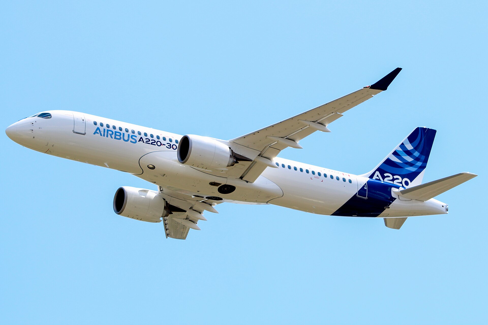

The Airbus A220 is a family of five-abreast narrow-body airliners by Airbus Canada Limited Partnership (ACLP). It was initially developed by Bombardier Aviation with the program launched on 13 July 2008 and had two years in-service as the Bombardier CSeries. The smaller A220-100 (formerly CS100) first flew on 16 September 2013, received an initial type certificate from Transport Canada on 18 December 2015, and entered service on 15 July 2016 with Swiss International Air Lines. The longer A220-300 (formerly CS300) first flew on 27 February 2015, received an initial type certificate on 11 July 2016, and entered service with airBaltic on 14 December 2016. Both launch operators recorded better-than-expected fuel burn and dispatch reliability, as well as positive feedback from passengers and crew.
